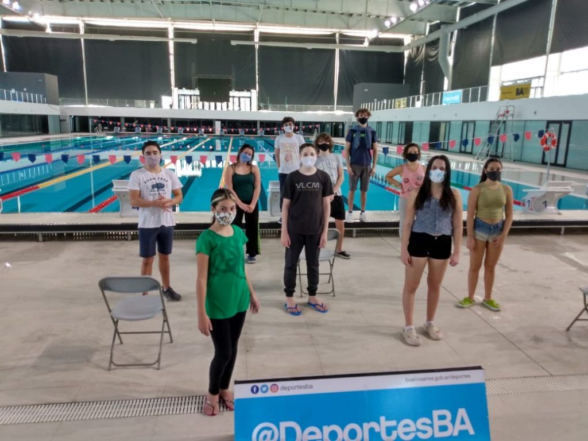
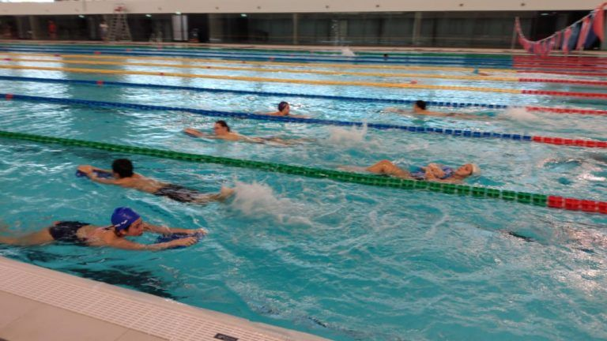

Categorias
Sabes, que cuando nadamos, producimos una mayor activación del Cerebro, lo que genera mayor oxígeno y liberación de toxinas. Cuando nadamos, liberamos endorfinas, llamada la hormona de la felicidad, cual juega a favor de nuestro bienestar, y salud mental-psíquica, a todas horas y en todos momentos. Se producen cambios en nuestro cuerpo, cual beneficia a la liberación o carga de estrés que hayamos concebido durante una larga o corta jornada en la oficina, o casa.
Principiantes
Aquí están tus entrenamientos para principiantes en natación Cada rutina va en su caja morada, donde verás también la distancia total. Después de cada entrenamiento verás una breve explicación, para detallar ejercicios o darte recomendaciones. Asegúrate de echarle un vistazo para entender correctamente todos los planes de natación. Algunas recomendaciones generales Si el entrenamiento que estés revisando no menciona el estilo en un ejercicio, se entiende que debes hacerlo a crol. Todos los ejercicios de técnica están explicados en la guía de técnica. Si dudas sobre qué significa un ejercicio, tendrás una explicación detallada en esa guía En las series de técnica no he incluido tiempos de descanso entre series. No deberías necesitar un descanso excesivo. Puedes parar unos segundos (5-10), lo suficiente para leer el siguiente ejercicio, coger el pullbuoy cuando toque, beber agua, etc. Entre bloques podrías parar un poco más, quizás hasta un minuto máximo, si lo necesitaras
Avanzados

Tenemos que tener siempre en cuenta el envión o empuje, la entrada al agua, y la Coordinación, equilibrio y la propiocepción. Esta última condición, es la capacidad que tiene el cuerpo para detectar el movimiento y la posición en las articulaciones, es decir, el sentido de la percepción y el equilibrio. Tener en cuenta también, la clase de cubo que se utiliza en las primeras practicas. La progresión a realizar, tiene cuatro momentos o posiciones fundamentales: La posición perfecta con salto y entrada de pié. Siempre se debe practicar y tratar de llegar a una correcta posición para realizar la salida. La posición inicial es muy similar a la de un corredor. Debe ser, con el pie delantero y posición del pie trasero. Una pierna debe estar detrás de tu cuerpo en línea con la cadera y la otra pierna debe estar en frente en el borde de los bloques, también en línea con la cadera, con un correcta semiflexión de piernas y contracción de musculatura, sin dificultar el inicio del movimiento. Los dedos del pie delantero deben estar agarrando el cubo. La cadera debe de estar más alta que tu cabeza, para logra una buen posición inicial. Y ambas manos deben estar agarrando el borde del cubo.